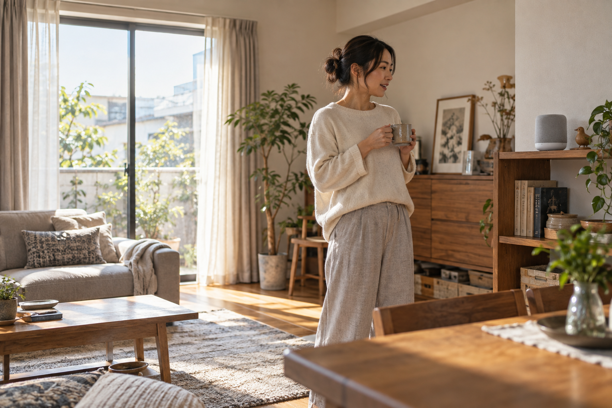

私の家では、スマホで鍵を開けると、機器を連携させる設定で廊下やリビングの照明がつきます。朝はスマートスピーカーに「おはよう」と声をかけると、ニュースを聞けてカーテンが開く。子どもも、よくスマートスピーカーに話しかけています。
鍵を開ける、明かりをつける、カーテンを開ける。そんな毎日の動作を少し楽にしてくれるのが、スマートホームやIoTです。私の家の一日をたどりながら、便利さと取り入れ方を紹介します。
スマホで解錠、帰宅時の点灯、朝のニュースとカーテン、家族の通知。著者の実体験から、便利さと家族への配慮を両立する導入方法を紹介します。
公開日：未定
スマートホーム・IoT・見守り 文｜エイスケ（住宅と教育の専門家）
文｜エイスケ（住宅と教育の専門家）
私の家では、スマホで鍵を開けると、機器を連携させる設定で廊下やリビングの照明がつきます。朝はスマートスピーカーに「おはよう」と声をかけると、ニュースを聞けてカーテンが開く。子どもも、よくスマートスピーカーに話しかけています。
鍵を開ける、明かりをつける、カーテンを開ける。そんな毎日の動作を少し楽にしてくれるのが、スマートホームやIoTです。私の家の一日をたどりながら、便利さと取り入れ方を紹介します。
カーテンを開け、照明をつけ、ニュースを聞く。別々の操作が一言でつながると、朝の動きがすっきりします。私の家では、こうした小さな便利さを日々使っています。
使いたい機能に応じて、対応するカーテン機器や照明、ハブ、連携設定をそろえます。購入前に、今ある機器との組み合わせを確かめましょう。
「朝、手の届きにくいカーテンを開けたい」「寝る前に照明を消したい」。まず一つ、楽にしたい場面を決めると、必要なものを選びやすくなります。

荷物を持って暗い玄関に帰った時、鍵の解錠に合わせて明かりがつくと助かります。私の家でも、スマートロックと照明を連携させて使っています。
外出時の一括消灯も便利ですが、施錠だけを合図にすると、室内に残る家族の照明まで消えることがあります。専用の外出ボタンを使うなど、「最後の一人が出かける時」に合う操作を決めましょう。
照明ごとに手動でも操作できるようにしておけば、いつもと違う過ごし方の日にも調整できます。
私が特に助かっているのは、家族の施錠・解錠の履歴や通知です。仕事中に子どもの解錠通知を見ると、「帰ってきたんだな」と安心できます。毎回「帰ったら連絡してね」と頼む負担も、少し軽くなりました。
個別のアカウントや鍵で、誰が操作したかを識別できる製品があります。家族ごとの鍵の操作記録を、帰宅の目安にできます。選ぶ時は、使いたい開け方に対応しているか、遠隔通知にハブが必要かを確認しましょう。
通知がない時は、通信や電池、いつもと違う開け方の可能性もあります。気になる時は直接連絡する。家族と共有する範囲を決めて使うと、見守りの手がかりになります。
帰宅前にエアコンをつけ、予定が変われば外出先から調整する。対応機器と設定があれば、こうした使い方もできます。
例えば帰宅時刻が決まっているなら、その少し前に動くように設定する。予定が変わった日は、外出先から運転を調整する。自宅なら、誰が残り、いつ帰るかを思い浮かべ、対応する機器で設定を考えてみましょう。
| 場面 | できることの例 | 先に決めること |
|---|---|---|
| 朝 | 声でニュース、カーテン、照明を連動 | 起きる時間が違う家族への配慮 |
| 仕事中 | 家族の施錠・解錠通知を見る | 本人と共有する範囲、気になる時の連絡方法 |
| 帰宅前 | 時刻や遠隔操作でエアコンを動かす | 予定変更、機器の状態、消し忘れ |
| 外出 | 必要な照明をまとめて消す | 家族やペットが残っている場合の条件 |
帰宅した時に部屋が涼しい、暖かい。それだけでも家に帰るのが楽しみになります。運転時間と電気代を見ながら、自分たちに合う開始時刻に調整しましょう。
室内カメラを使うなら、カメラがあること、映る範囲、誰が見るか、録画するかを、家族や映る人に伝えます。見守る目的と、撮られたくない場所や時間を話し合いましょう。
訪問者や介護スタッフが映る場合も、撮影について伝えておきます。帰宅の確認が目的なら、映像を使わず鍵の通知で足りるかもしれません。必要な情報に合う方法を選びたいですね。
便利さの感じ方は、人によって違います。使い始めてからも家族の意見を聞き、見る人や通知の設定を見直しましょう。
電池切れ、スマホの置き忘れ、通信障害。その時に物理鍵や手動操作を使えるか、家族で一度試しておきましょう。設定した本人がいなくても、鍵や照明を使える状態にしておくことが大切です。
機器やアプリを更新し、不要な閲覧権限は削除します。IPAも家庭用ルータなどの更新や設定確認を呼びかけています。[1]購入時には、追加機器、利用料、電池交換、サポート期間も合わせて確かめてください。
私は、こうした道具をもっと気軽に試してほしいと思っています。最初は、一つの困りごとから。朝の支度や帰宅時の動作が少し楽になるだけでも、住まいの使い心地は変わります。
後付けで始められる機器もあります。既存設備との適合や必要なハブなどを確認します。
家族ごとのアカウントや鍵に対応する製品なら、誰が操作したかを履歴で確認できます。その記録を帰宅の目安に使います。
在宅中の施錠や残っている家族を考え、動作条件を決める必要があります。
快適さの工夫です。運転時間や使い方によって消費電力が増える場合もあります。
存在、映る範囲、見る人、録画などを本人や関係する人と共有します。
製品ごとに動作が違います。物理鍵や手動操作など代替方法を先に確認します。
この記事を書いた人｜エイスケ
1986年生まれ。実家の工務店・不動産に10年間従事したのち、教育の世界へ。住宅と教育、両方の視点から「豊かな暮らし」をテーマに執筆します。※本コラムは筆者個人の見解・経験に基づくものです。最終的な判断は各分野の専門家にご相談ください。